The Activity class is a crucial component of an Android app, and the way activities are launched and put together is a fundamental part of the platform's application model.
Unlike other programming paradigms in which apps are launched with a main() method, the Android system initiates code in an Activity
instance by invoking specific callback methods that correspond to specific stages of its lifecycle .
The concept of activities
The mobile-app experience differs from its desktop counterpart in that a user's interaction with the app
doesn't always begin in the same place. Instead, the user journey often begins non-deterministically. For instance, if you open an email app from your home screen,
you might see a list of emails. By contrast, if you are using a social media app that then launches your email app,
you might go directly to the email app's screen for composing an email.
The Activity class is designed to facilitate this paradigm. When one app invokes another, the calling app invokes an activity in the other app,
rather than the app as an atomic whole. In this way, the activity serves as the entry point for an app's interaction with the user.
You implement an activity as a subclass of the Activity class.
An activity provides the window in which the app draws its UI. This window typically fills the screen, but may be smaller
than the screen and float on top of other windows. Generally, one activity implements one screen in an app.
For instance, one of an app’s activities may implement a Preferences screen , while another activity implements a Select Photo screen .
Most apps contain multiple screens , which means they are composed by multiple activities.
Typically, one activity in an app is specified as the main activity, which is the first screen to appear when the user launches the app.
Each activity can then start another activity in order to perform different actions.
For example, the main activity in a simple e-mail app may provide the screen that shows an e-mail inbox.
From there, the main activity might launch other activities that provide screens for tasks like writing e-mails and opening individual e-mails .
Although activities work together to form a cohesive user experience in an app, each activity is only loosely bound to the other activities;
there are usually minimal dependencies among the activities in an app. In fact, activities often start up activities belonging to other apps.
For example, a browser app might launch the Share activity of a social-media app.
To use activities in your app, you must register information about them in the app’s manifest, and you must manage activity lifecycles appropriately.
Configuring the manifest
For your app to be able to use activities, you must declare the activities, and certain of their attributes, in the manifest.
To declare your activity, open your manifest file and add an <activity> element as a child of the <application> element. For example:
As a user navigates through, out of, and back to your app, the Activity instances in your app transition through different states
in their lifecycle. The Activity class provides a number of callbacks
that allow the activity to know that a state has changed: that the system is creating, stopping, or resuming an activity , or
destroying the process in which the activity resides.
Within the lifecycle callback methods, you can declare how your activity behaves when the user leaves and re-enters the activity .
For example, if you're building a streaming video player, you might pause the video and terminate the network connection when the user switches to another app.
When the user returns, you can reconnect to the network and allow the user to resume the video from the same spot.
In other words, each callback allows you to perform specific work that's appropriate to a given change of state.
Doing the right work at the right time and handling transitions properly make your app more robust and performant.
For example, good implementation of the lifecycle callbacks can help ensure that your app avoids:
Crashing if the user receives a phone call or switches to another app while using your app.
Consuming valuable system resources when the user is not actively using it.
Losing the user's progress if they leave your app and return to it at a later time.
Crashing or losing the user's progress when the screen rotates between landscape and portrait orientation.
To navigate transitions between stages of the activity lifecycle, the Activity class provides a core set of six callbacks:
onCreate() , onStart() , onResume() , onPause() ,
onStop() , and onDestroy() . The system invokes each of these callbacks as an activity enters a new state.
Activity Lifecycle
As the user begins to leave the activity, the system calls methods to dismantle the activity. In some cases, this dismantlement is only partial;
the activity still resides in memory (such as when the user switches to another app),
and can still come back to the foreground. If the user returns to that activity, the activity resumes from where the user left off.
The system’s likelihood of killing a given process —along with the activities in it— depends on the state of the activity at the time
onCreate()
You must implement this callback, which fires when the system creates your activity.
Your implementation should initialize the essential components of your activity:
For example, your app should create views and bind data to lists here.
Most importantly, this is where you must call setContentView() to define the layout for the activity's user interface.
When onCreate() finishes, the next callback is always onStart().
onStart()
As onCreate() exits, the activity enters the Started state ,
and the activity becomes visible to the user. This callback contains what amounts to the activity’s final
preparations for coming to the foreground and becoming interactive.
onResume()
The system invokes this callback just before the activity starts interacting with the user.
At this point, the activity is at the top of the activity stack, and captures all user input. Most of an app’s core functionality is
implemented in the onResume() method.
The onPause() callback always follows onResume() .
onPause()
The system calls onPause() when the activity loses focus and enters a Paused state.
This state occurs when, for example, the user taps the Back or Recents button.
When the system calls onPause() for your activity, it technically means your activity is still partially visible,
but most often is an indication that the user is leaving the activity, and the activity will soon enter the Stopped or Resumed state.
An activity in the Paused state may continue to update the UI if the user is expecting the UI to update.
Examples of such an activity include one showing a navigation map screen or a media player playing.
Even if such activities lose focus, the user expects their UI to continue updating.
You should not useonPause() to save application or user data, make network calls,
or execute database transactions.
Once onPause() finishes executing, the next callback is either onStop() or onResume(),
depending on what happens after the activity enters the Paused state .
onStop()
The system calls onStop() when the activity is no longer visible to the user. This may happen because the activity is being destroyed ,
a new activity is starting , or an existing activity is entering a Resumed state and is covering the stopped activity.
In all of these cases, the stopped activity is no longer visible at all.
The next callback that the system calls is either onRestart() ,
if the activity is coming back to interact with the user, or by onDestroy() if this activity is completely terminating.
onRestart()
The system invokes this callback when an activity in the Stopped state is about to restart. onRestart()
restores the state of the activity from the time that it was stopped.
This callback is always followed by onStart().
onDestroy()
The system invokes this callback before an activity is destroyed.
This callback is the final one that the activity receives onDestroy() is usually implemented to
ensure that all of an activity’s resources are released when the activity, or the process containing it, is destroyed.
Intents - Intent Filters
An Intent is a messaging object you can use to request an action from another app component.
Although intents facilitate communication between components in several ways, there are three fundamental use cases:
Starting an activity
An Activity represents a single screen in an app.
You can start a new instance of an Activity by passing an Intent to startActivity().
The Intent describes the activity to start and carries any necessary data.
If you want to receive a result from the activity
when it finishes, call startActivityForResult().
Your activity receives the result as a separate Intent object in your activity's onActivityResult() callback
Starting an service
A Service is a component that performs operations in the background
without a user interface. With Android 5.0 (API level 21) and later, you can start a service with JobScheduler.
Delivering a broadcast
A broadcast is a message that any app can receive.
The system delivers various broadcasts for system events, such as when the system boots up or the device starts charging.
You can deliver a broadcast to other apps by passing an Intent to sendBroadcast() or sendOrderedBroadcast()
Launching another Activity from same app
You can see the whole example in:
In this subsection we are going to see one way to launch another activity in the same app with intents.
Firstly, we have to create new project with an empty activity template and then we're going to add another activity. For that, click with the right button of the mouse over project section and then selecte new -> activity -> empty activity
Name it as Activity2 . Is not a good name but for this example is enough.
New activity "Activity2" created
In order to show Activity2 we're going to add a button in the MainActivity
For create an Intent that goes to another of our actitities we should use its constructor. It accepts at least two params,
the first one is the context , that is where and who is going to call the function. The second one is the destination activity class .
val intent = Intent(this, Activity2::class.java)
Then in the MainActivity.kt we should add a listener for the button that starts the new activity with the created Intent
MainActivity.kt
override fun onCreate(savedInstanceState: Bundle?) {
super.onCreate(savedInstanceState)
binding = ActivityMainBinding.inflate(layoutInflater)
setContentView(binding.root)
binding.button.setOnClickListener{ openActivity2() }
}
private fun openActivity2() {
val intent = Intent(this, Activity2::class.java)
startActivity(intent)
}
Now is Actitity2's turn, so let's make the listener for the back button. To return to the previous activity we have mainly two options:
Implement a similar method that in MainActivity.
binding.btnBack.setOnClickListener{
val intent = Intent(this, MainActivity::class.java)
startActivity(intent)
}
Simply close current Activity. By default, when you start an activity goes to the top of the task stack, if you start another activity,
the last one opened goes to the top. If you close the last activity, the previous activity goes to the top, that means this is the one is running
binding.btnBack.setOnClickListener{
finish()
}
The two options above are distincs, let's see why. The thing is that if you call again startActivity function you creates a new Instance
Activity Task Stack using startActivity again in the Activity2:
So far we have opened and closed activities, from our application, but ... what if we want the activities to communicate with each other, that is, pass information from one to another?
In this section we will see how to pass simple data to another activity through bundles (extras)and pass full parcelable objects.
Bundle extra
Let's imagine that our MainActivity was a Login screen , and we want to pass the username and surname to Activity2.
In this case username and surname will be a String.
We will add this data to the Intent
MainActivity.kt
private val userName:String = "Carlos"
private val surName:String = "Tarazona"
companion object{ //A companion objects acts like an static class in Java
val KEY_EXTRA_NAME:String ="MY_KEY_EXTRA_NAME"
val KEY_EXTRA_SURNAME:String ="MY_KEY_EXTRA_SURNAME"
}
private fun openActivity2() {
val intent = Intent(this, Activity2::class.java)
val bundle = Bundle()
bundle.putString(KEY_EXTRA_NAME,userName)
intent.putExtras(bundle)
//or directly
intent.putExtra(KEY_EXTRA_SURNAME, surName)
startActivity(intent,bundle)
}
Or even better, using Kotlin operator Apply
private fun openActivity2() {
val intent = Intent(this, Activity2::class.java).apply {
putExtra(KEY_EXTRA_NAME, userName)
putExtra(KEY_EXTRA_SURNAME, surName)
}
startActivity(intent)
}
Now in the other activity (Activity2 ), we check for extras and retrieve them
Now we are going to make the called activity return data, we could do as in the previous one and put it in the Intent and call startActivity() ,
but as we've seen before, this push more activities into the task stack. To perform this type of actions we use registerForActivityResult()
Traditional startActivityForResult() method is deprecated
So, to start another activity waiting for a result we should use registerForActivityResult
var resultLauncher = registerForActivityResult(ActivityResultContracts.StartActivityForResult()) { result ->
if (result.resultCode == Activity.RESULT_OK) {
//Here we have the result of Activity2
val data: Intent? = result.data
//We use the extra included in the returned intent
binding.tvGreeting.text = "Hello ${data?.getStringExtra(KEY_EXTRA_RESULT)?:"No return"}"
}
}
As you would have noticed, registerForActivityResult takes two parameters.
The first defines the type of action/interaction needed (ActivityResultContracts) and the second is a callback function where we receive the result.
And for launching that activity we use:
val intent = Intent(this, Activity2::class.java)
resultLauncher.launch(intent)
MainActivity.kt
class MainActivity : AppCompatActivity() {
private lateinit var binding:ActivityMainBinding
private val userName:String = "Carlos"
private val surName:String = "Tarazona"
companion object{
val KEY_EXTRA_NAME:String ="MY_KEY_EXTRA_NAME"
val KEY_EXTRA_SURNAME:String ="MY_KEY_EXTRA_SURNAME"
val KEY_EXTRA_RESULT:String ="MY_KEY_EXTRA_RESULT"
}
override fun onCreate(savedInstanceState: Bundle?) {
super.onCreate(savedInstanceState)
binding = ActivityMainBinding.inflate(layoutInflater)
setContentView(binding.root)
binding.button.setOnClickListener{ openSomeActivityForResult() }
}
var resultLauncher = registerForActivityResult(ActivityResultContracts.StartActivityForResult()) { result ->
if (result.resultCode == Activity.RESULT_OK) {
val data: Intent? = result.data
binding.tvGreeting.text = "Hello ${data?.getStringExtra(KEY_EXTRA_RESULT)?:"No return"}"
}
}
fun openSomeActivityForResult() {
val intent = Intent(this, Activity2::class.java)
resultLauncher.launch(intent)
}
}
But, how can we return data from called activity (Activity2)?. We just have call seResult method, that takes two
params, the first one is the resultCode and the last one the intent with data
Activity2.kt
binding.btnBack.setOnClickListener{
val text = binding.etName.text.toString()
val returnIntent = Intent().apply {
putExtra(KEY_EXTRA_RESULT, text)
} //Creates a new Intent with editText content as extra
if(text != "")
setResult(RESULT_OK, returnIntent) //The action went ok.
else
setResult(RESULT_CANCELED, returnIntent)
finish() //Finish and close this activity
}
Parcelable objects
What is Parcelable?
It is an interface whose purpose is to allow a quick way to pass objects between the various components that Android has.
This process is lighter and faster than using serializable .
The first thing we will do is create a data class called Person and I will make it implement Parcelable.
The good news is that Kotlin allows us to implement implementations in this particular type of class.
Person.kt
package com.cartatar.intentactivitysameapp
import android.os.Parcel
import android.os.Parcelable
data class Person(val name: String?, val surname: String?):Parcelable {
constructor(parcel: Parcel) : this(
parcel.readString(),//name
parcel.readString()//surname, the parameters have to have same order that writeToParcel
) {
}
override fun writeToParcel(parcel: Parcel, flags: Int) {
parcel.writeString(name)
parcel.writeString(surname)
}
override fun describeContents(): Int {
return 0
}
companion object CREATOR : Parcelable.Creator {
override fun createFromParcel(parcel: Parcel): Person {
return Person(parcel)
}
override fun newArray(size: Int): Array {
return arrayOfNulls(size)
}
}
}
And now, we simply have to pass this object through the intent with an extra.
MainActivity.kt
override fun onCreate(savedInstanceState: Bundle?) {
super.onCreate(savedInstanceState)
binding = ActivityMainBinding.inflate(layoutInflater)
setContentView(binding.root)
binding.button.setOnClickListener{ sendParcelablePerson() }
}
private fun sendParcelablePerson() {
val person = Person("Carlos", "Tarazona")
val intent = Intent(this, Activity2::class.java).apply {
putExtra(KEY_EXTRA_RESULT_PARCELABLE, person)
}
startActivity(intent)
}
Receiving the data class in Activity2 is quite similar to receiving other data
Activity2.kt
var myText:String? = null
if(intent.hasExtra(KEY_EXTRA_RESULT_PARCELABLE)){
val person = intent.getParcelableExtra(KEY_EXTRA_RESULT_PARCELABLE)
person.let{person ->
myText = "${person?.name} ${person?.surname}"
}
}
binding.tvTop.text = myText?:"No user"
Allowing Other Apps to Start Your Activity
If your app can perform an action that might be useful from another app, your app should be prepared to respond to action requests by specifying the appropriate intent filter in your activity.
For example, if you build a social app that can share messages or photos with the user's friends, you should support the ACTION_SEND intent.
Then, when users initiate a "share" action from another app, your app appears as an option in the chooser dialog (also known as the "disambiguation dialog"),
as shown in figure
Disambiguation dialog
To allow other apps to start your activity in this way, you need to add an <intent-filter> element in your manifest file for
the corresponding <activity> element.
When your app is installed on a device, the system identifies your intent filters and adds the information to an internal catalog of intents supported by all installed apps. When an app calls startActivity()
or startActivityForResult() , with an implicit intent, the system finds which activity (or activities) can respond to the intent.
Add an Intent Filter
In order to properly define which intents your activity can handle, each intent filter you add should be as specific as possible
in terms of the type of action and data the activity accepts.
The system may send a given Intent to an activity if that activity has an intent filter fulfills the following criteria of the Intent object:
Action
A string naming the action to perform. Usually one of the platform-defined values such as ACTION_SEND or ACTION_VIEW .
Specify this in your intent filter with the <action> element.
The value you specify in this element must be the full string name for the action, instead of the API constant.
Data
A description of the data associated with the intent.
Specify this in your intent filter with the <data> element. Using one or more attributes in this element,
you can specify just the MIME type, just a URI prefix, just a URI scheme, or a combination of these and others that indicate the data type accepted.
Category
Provides an additional way to characterize the activity handling the intent, usually related to the user gesture or location from which it's started.
There are several different categories supported by the system, but most are rarely used.
However, all implicit intents are defined with CATEGORY_DEFAULT by default.
Specify this in your intent filter with the <category> element.
In your intent filter, you can declare which criteria your activity accepts by declaring each of them with corresponding XML elements nested in the
<intent-filter> element.
For example, here's an activity with an intent filter that handles the ACTION_SEND intent when the data type is either text or an image:
We are going to show an example using the application we created earlier. Basically we will make our App send a defined text to another App
called SharedActivities, it will take the text, convert it to capital letters and when pressing the button it will return that text to the initial application. In the image below you can see how it works
Running sample
So, let's code
First we are going to create an application, which converts a text into capital letters, it is a silly application but it serves as an example.
In addition, this application will have 2 activities MainActivity, which will not do anything it is only for
academic purpose, and SharedActivity , which will receive a text, and pass it to uppercase, it will also
have a button to return the text in uppercase to the application that called it.
To call SharedActivities app from our app responding to click event. Pay atention in Intent.createChooser() method, that allows us choose destination App
MainActivity.kt
var myResultLauncher = registerForActivityResult(ActivityResultContracts.StartActivityForResult()) { result ->
if (result.resultCode == Activity.RESULT_OK) {
val data: Intent? = result.data
//When data go back we put it in the text view
binding.tvGreeting.text = "${data?.getStringExtra(Intent.EXTRA_RETURN_RESULT)}"
}
}
override fun onCreate(savedInstanceState: Bundle?) {
super.onCreate(savedInstanceState)
binding = ActivityMainBinding.inflate(layoutInflater)
setContentView(binding.root)
binding.button.setOnClickListener{ sendShared() }
}
private fun sendShared() {
val sendIntent: Intent = Intent().apply {
action = Intent.ACTION_SEND
putExtra(Intent.EXTRA_TEXT, "Hi there! pass that to uppercase and send back.")
type = "text/plain"
}
val shareIntent = Intent.createChooser(//Selector that allow us choose destination app according the action and intent-filter
sendIntent,
"Hey choose an app to uppercase") //Title of selector window
myResultLauncher.launch(shareIntent)
}
And now, in SharedActivity of SharedActivities app, we have to receive the data
SharedActivity.kt
class SharedActivity : AppCompatActivity() {
private lateinit var binding: ActivitySharedBinding
override fun onCreate(savedInstanceState: Bundle?) {
super.onCreate(savedInstanceState)
setContentView(R.layout.activity_shared)
binding = ActivitySharedBinding.inflate(layoutInflater)
setContentView(binding.root)
val data = intent
var text:String? = null
data?.let{
if(data.hasExtra(Intent.EXTRA_TEXT))
text = data.getStringExtra(Intent.EXTRA_TEXT).toString().uppercase()
binding.tvShared.text = text
}
binding.btnSendBack.setOnClickListener {
val intent = Intent().apply {
putExtra(Intent.EXTRA_RETURN_RESULT, text?:"No text")
}
setResult(RESULT_OK,intent)
finish()
}
}
}
Some examples of common intents
Next snippets show you how to implement some common functions
Warning
If there are no apps on the device that can receive the implicit intent, your app will crash when it calls startActivity().
To first verify that an app exists to receive the intent, call resolveActivity() on your Intent object.
If the result is non-null , there is at least one app that can handle the intent and it's safe to call startActivity().
If the result is null , you should not use the intent and, if possible, you should disable the feature that invokes the intent.
Make a phone call
fun dialPhoneNumber(phoneNumber: String) {
val intent = Intent(Intent.ACTION_DIAL).apply {
data = Uri.parse("tel:$phoneNumber")
}
if (intent.resolveActivity(packageManager) != null) {
startActivity(intent)
}
}
fun addEvent(title: String, location: String, begin: Long, end: Long) {
val intent = Intent(Intent.ACTION_INSERT).apply {
data = Events.CONTENT_URI
putExtra(Events.TITLE, title)
putExtra(Events.EVENT_LOCATION, location)
putExtra(CalendarContract.EXTRA_EVENT_BEGIN_TIME, begin)
putExtra(CalendarContract.EXTRA_EVENT_END_TIME, end)
}
if (intent.resolveActivity(packageManager) != null) {
startActivity(intent)
}
}
Capture a picture or video and return it
const val REQUEST_IMAGE_CAPTURE = 1
val locationForPhotos: Uri = ...
fun capturePhoto(targetFilename: String) {
val intent = Intent(MediaStore.ACTION_IMAGE_CAPTURE).apply {
putExtra(MediaStore.EXTRA_OUTPUT, Uri.withAppendedPath(locationForPhotos, targetFilename))
}
if (intent.resolveActivity(packageManager) != null) {
startActivityForResult(intent, REQUEST_IMAGE_CAPTURE)
}
}
override fun onActivityResult(requestCode: Int, resultCode: Int, data: Intent) {
if (requestCode == REQUEST_IMAGE_CAPTURE && resultCode == Activity.RESULT_OK) {
val thumbnail: Bitmap = data.getParcelableExtra("data")
// Do other work with full size photo saved in locationForPhotos
...
}
}
Email
fun composeEmail(addresses: Array, subject: String, attachment: Uri) {
val intent = Intent(Intent.ACTION_SEND).apply {
type = "*/*"
putExtra(Intent.EXTRA_EMAIL, addresses)
putExtra(Intent.EXTRA_SUBJECT, subject)
putExtra(Intent.EXTRA_STREAM, attachment)
}
if (intent.resolveActivity(packageManager) != null) {
startActivity(intent)
}
}
New note
fun createNote(subject: String, text: String) {
val intent = Intent(NoteIntents.ACTION_CREATE_NOTE).apply {
putExtra(NoteIntents.EXTRA_NAME, subject)
putExtra(NoteIntents.EXTRA_TEXT, text)
}
if (intent.resolveActivity(packageManager) != null) {
startActivity(intent)
}
}
Web search
fun searchWeb(query: String) {
val intent = Intent(Intent.ACTION_WEB_SEARCH).apply {
putExtra(SearchManager.QUERY, query)
}
if (intent.resolveActivity(packageManager) != null) {
startActivity(intent)
}
}
Show a location on a map
fun showMap(geoLocation: Uri) { //example "geo:0,0?q=39.4295152,-0.4660814(Treasure)"
val intent = Intent(Intent.ACTION_VIEW).apply {
data = geoLocation
}
if (intent.resolveActivity(packageManager) != null) {
startActivity(intent)
}
}
Open Wifi Settings
fun openWifiSettings() {
val intent = Intent(Settings.ACTION_WIFI_SETTINGS)
if (intent.resolveActivity(packageManager) != null) {
startActivity(intent)
}
}
Text message
fun composeMmsMessage(message: String, attachment: Uri) {
val intent = Intent(Intent.ACTION_SENDTO).apply {
type = HTTP.PLAIN_TEXT_TYPE
putExtra("sms_body", message)
putExtra(Intent.EXTRA_STREAM, attachment)
}
if (intent.resolveActivity(packageManager) != null) {
startActivity(intent)
}
}
Web browser
fun openWebPage(url: String) {
val webpage: Uri = Uri.parse(url)
val intent = Intent(Intent.ACTION_VIEW, webpage)
if (intent.resolveActivity(packageManager) != null) {
startActivity(intent)
}
}
Test Activity Lifecycle
Build a two activities app and catch all states of both activities according activity life cycle, onResume, onStart, onCreate, onDestroy, onRestart, onStop... in each one just call super and add a Log.i("ACTIVITYNAME", "STATE (onResume, onStart...)")
Once done, start the App, navigate between activities, hide the app, and study which callbacks are running and in what order
Fragments
What's a fragment?
Fragments represent a basic component when developing an app. Until now we know the activities, which we explained in chapter above.
Now let's imagine that the fragment is a variant of the activity but with less power, but more manageable, that is, its behavior
is very similar (they have a layout and a class to program ) but they have to be inside an activity.
The difference is that this component is more reusable, and can be added together with more fragments in the same activity.
Its popularity began with the fashion of tablets , they were very large screens that allowed you to take more advantage
of the fragments by adding several in a single activity, showing more information than on a mobile.
Master/detail app
They are available from API 11 (Android 3.0) and since then three different versions have been released.
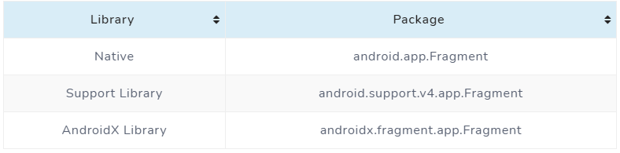 Fragment versions
If we look at the previous table, we see that the first library is the native one (the fragments that came out in API 11),
although they are perfectly functional, they are deprecated. That is, Google thinks that its code is no longer optimized for the new versions,
and that is why it put the new Fragments in the Support Library , which will be the one we will use.
We finished with Android X, which belongs to the new Google libraries but we will see them later, although if you want to learn more you can do it here .
We finish the table with the package, which means the type of import that we have to do in our class for it to detect it.
Although they are not used so often, they are still essential for various components that you see in the day-to-day of your favorite applications,
so it is very necessary to fully understand their operation for advanced view design.
Fragment Example
We are going to create a new project called FragmentExample.
The idea of this app will be very simple. In our main activity we will include two fragments
that will occupy half of the screen respectively. Each one will have a button that will contact the activity to display a message.
Once we have created our project, we will go to the path where the MainActivity class is and in the package
(name of Your Package/fragmentexample) we will right click and select New > Fragment > Fragment (Blank).
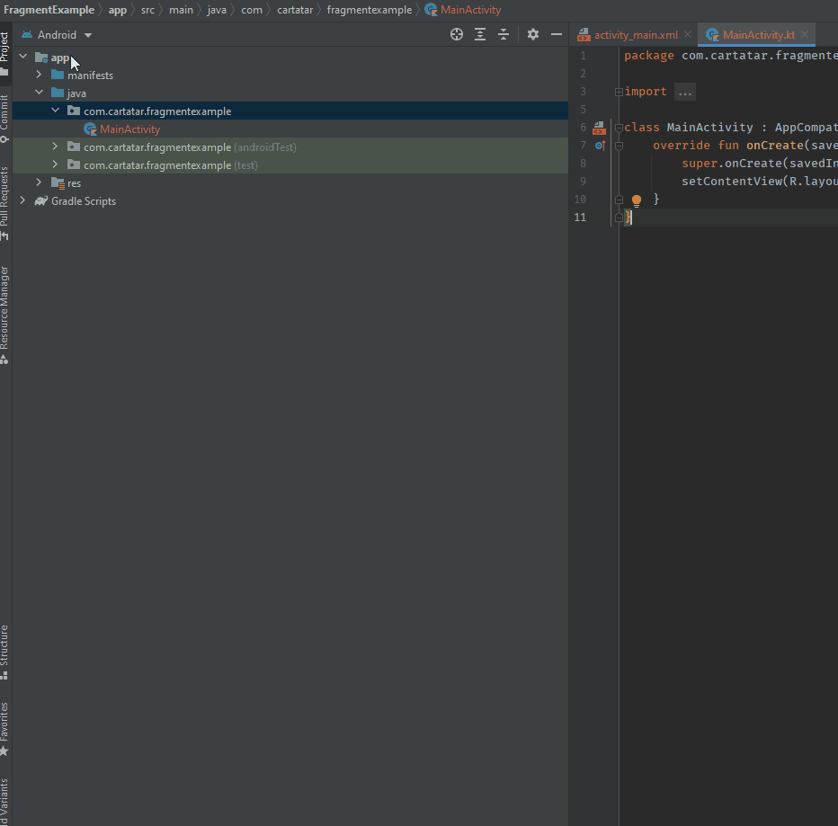
Then a confirmation screen will appear that will allow us to add the name. We will call it RedFragment.
Now we have two new files RedFragment.kt and fragment_red.xml, for the class fragment and its layout
RedFragment.kt
As you can see it already has code from a template
class RedFragment : Fragment() {
// TODO: Rename and change types of parameters
private var param1: String? = null
private var param2: String? = null
override fun onCreate(savedInstanceState: Bundle?) {
super.onCreate(savedInstanceState)
arguments?.let {
param1 = it.getString(ARG_PARAM1)
param2 = it.getString(ARG_PARAM2)
}
}
override fun onCreateView(
inflater: LayoutInflater, container: ViewGroup?,
savedInstanceState: Bundle?
): View? {
// Inflate the layout for this fragment
return inflater.inflate(R.layout.fragment_red, container, false)
}
companion object {
/**
* Use this factory method to create a new instance of
* this fragment using the provided parameters.
*
* @param param1 Parameter 1.
* @param param2 Parameter 2.
* @return A new instance of fragment RedFragment.
*/
// TODO: Rename and change types and number of parameters
@JvmStatic
fun newInstance(param1: String, param2: String) =
RedFragment().apply {
arguments = Bundle().apply {
putString(ARG_PARAM1, param1)
putString(ARG_PARAM2, param2)
}
}
}
}
The first thing we will do is give it a very simple design. We will define the two colors that we will use in the app.
We will go to app/res/values/colors.xml. If it does not exist we will create it by right clicking on values
(new > Values resource file). Inside we will see seven (depending on the version) colors created, do not delete them, since the system will always
need those three to paint the app. We will add two more, red and blue.
If you have not worked with resources, this is nothing more than a "shortcut" to define the colors that we will use in the app.
It is about defining a name (in this case red and blue) and assigning them a hexadecimal color code. If you want to try other colors,
just click on the color box that appears at the beginning of the line and play with the visual editor.
Now we go back to the fragment and access its layout, which is called fragment_red.xml.
The design will be very simple, with a red background and a blue button in the center.
Now we will repeat the process, we will create another fragment called BlueFragment that will have an opposite design,
that is, the color of the background will be blue and that of the button red.
Now that we have the two fragments created we are going to go back to our MainActivity
and go to its layout, called activity_main. Once inside we edit it and leave it like that.
Let's analyze the code above. The first thing has been to create a linearLayout that allows you to place components horizontally or
vertically depending on the value that we put in the android: orientation property. Then we have created two fragment
components that contain a name attribute where we must set the path of our fragment, a unique id to refer to each of the fragments.
The layout_height and layout_width attributes, as we know, are mandatory,
but in this case we have put 0dp in the width . This is because a linearLayout property is
that if we set a width or height to 0dp and set the layout_weight property, we can divide the available size into a percentage.
That is, if we put layout_weight = 1 to each of the linearLayout components, both will occupy an exact percentage of the screen
(in this case 50%). If we change and put a weight of 2 in one of the components, it will occupy 66.6% while the other will occupy the remaining 33.3% and so on.
If we run our app right now, we would see something like this.
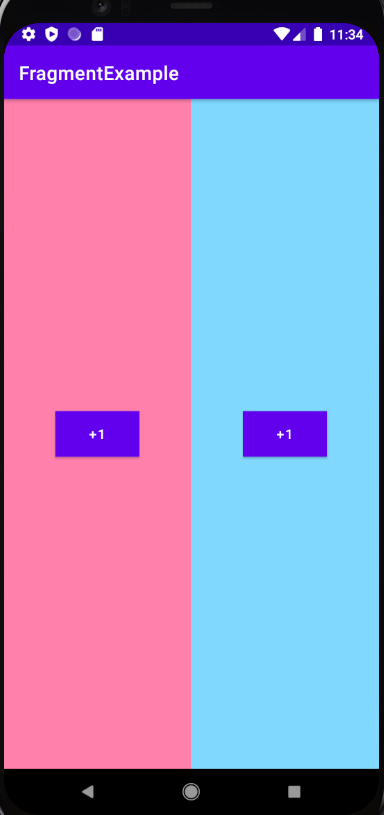 Running app
Very nice, but right now the app won't do anything. In order to continue we must enter and understand more about the functioning of the fragments.
Fragment's lifecycle
underconstruction
The life cycle of a fragment is nothing more than the methods through which it passes from when it is created until it is destroyed,
as a simile our life cycle if they were functions would be to be born (), grow (), reproduce () and die(). Well, it's basically the same.
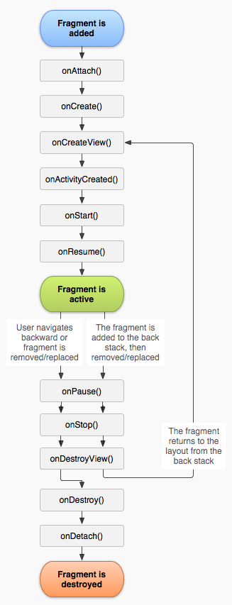 Fragment's lifecycle
In the image above, we will see the life cycle. Before explaining it, we must understand that our fragment extends from a higher class
called Fragment , therefore, although we do not see these methods within our class, they are being executed from behind.
In addition, we can overwrite them and modify their behavior to do what we need.
Another Image with Activities' lifecycle
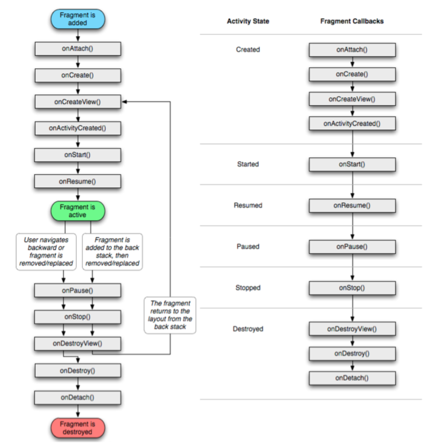 Fragment's lifecycle
Creation states
The first thing we have to do to start the life cycle is to add the fragment.
In the above example, this event is reproduced when executing the MainAcitivity, because in its layout, it contains two fragments.
It is at that moment when the cycle begins, the next step will be the onAttach() function, in other words, it will "bind" our activity
to our fragment, giving them the opportunity to communicate. We move to onCreate() which will be called when we have created the
fragment instance, that is, we are "building" it.
Then we will get to onCreateView(), that if we look at our fragments, this method will appear with a keyword at the beginning (override),
this tells the system that it is going to do what it should do as a general rule, but then we will to modify its behavior by adding extra functionalities,
in this case we are returning the view that will contain this fragment. When the view has finished creating, we will arrive at onActivityCreated(),
which notice us that everything is available. This is a good place to add onClick() functions or initialize fragment variables.
Creation State
The onStart() method will be launched almost right after the previous method, and it will notify us when we can work with the fragment.
Resume State
The following is basically the same, onResume() will act in a similar way but it will be called more times,
for example if we minimize the application on the mobile and reopen it, the onResume() function will be called
again, but onStart() will not.
Pause State
When a new activity is placed on top of the one that hosts the fragment,
but this first activity does not fully cover the fragment's view, the onPause() method starts, but even in this state the information that is in the fragment
is preserved.
Stop State
If the previous process is repeated, but the screen is completely covered or the fragment has been removed from the activity,
it changes to the onStop() state. The stopped fragment is still active,
but will be destroyed if its containing acitivity is destroyed.
Destroy State
It contains three different functions that will be called sequentially once the processes are ending.
The first will be onDestroyView() that will be called when the view is going to be destroyed, when it ends it will go through
onDestroy() that will end the life of the fragment, ending with onDetach(),
which will do the opposite of the onAttach() function that we saw before, basically detach the activity with the fragment.
If we basically look at a create and destroy loop, but we need to understand what each of these functions does to see the next step.
Communication activity – fragment
There are times, like in this example, that we need our activity to do something, either to control and centralize the logic or because there
are different functions that fragments cannot do. Therefore, we must understand that the simplest way we have to do this is through listeners.
To do this, the first thing we will do is go to the directory where we have our activity and fragments and with the right button on the directory, go to new > Kotlin File Class
and a dialog will appear to configure our file. We will call it OnFragmentActionsListener and in kind we will select interface.
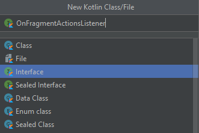
Our interface establishes a contract between those who use them, if we add it to our activity, all the methods that are in the interface must be added to this activity.
We will create a function in the interface , but unlike the classes we will work with, we will only define the function
with its input or output parameters if they have one, but not the logic (body), since it has to be implemented wherever we implement the
interface.
interface OnFragmentActionsListener {
fun onClickFragmentButton()
}
We have added a function called onClickFragmentButton() that does not take parameters or return anything.
Now we will implement this interface in the MainActivity class. For this we will add it in the first line, leaving our activity like this.
class MainActivity : AppCompatActivity(), OnFragmentActionsListener {
override fun onCreate(savedInstanceState: Bundle?) {
super.onCreate(savedInstanceState)
setContentView(R.layout.activity_main)
}
}
If we try to compile now it will not let us, because if you look under the class name it will have a red line that warns us of an error.
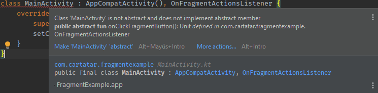 Error, method not implemented
This error is telling us that we have implemented an interface but we have not added its methods,
for this we will do the following, we will go to the top menu > Code > Implement methods and we will get a dialog with all
the methods that we must implement, in this case it is only one .
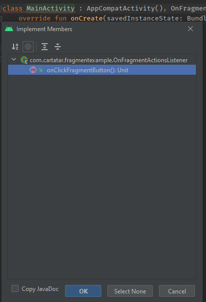 Implement methods
Once we have accepted, we see how a new function is added to our class.
override fun onClickFragmentButton() {
TODO("not implemented") //To change body of created functions use File | Settings | File Templates.
}
As we have already talked about before, this function has the override reserved word before it, and inside it has a TODO
that is nothing more than a reminder that we must do something with it, so we can delete that line.
Within this method we will add a Toast , which is a message that will appear at the bottom of the screen when the method is called.
override fun onClickFragmentButton() {
Toast.makeText(this, "Button has been pushed", Toast.LENGTH_SHORT).show()
}
With this we would not have to do anything else in the activity. We go back to the fragments, going to BlueFragment.
The first thing we will do is add our listener to the fragment, for this we will start by declaring a listener variable, which is the same type as the interface.
private var listener: OnFragmentActionsListener? = null
We will put this variable at the beginning of the class, and it can be null, so we force ourselves to check its content before
trying to execute any action.
Then to initialize it we will use one of the methods that we saw in the life cycle , the onAttach() function.
override fun onAttach(context: Context) {
super.onAttach(context)
if (context is OnFragmentActionsListener) {
listener = context
}
}
Let's analyze the above function. The first line calls the super() function, which is nothing more than the way we
tell the system that, although we want it to do more things, it executes the code that has to be executed when calling this function.
That is, we want to add things but not remove what that method would normally do.
Then we find an if(), which will check if the context that reaches the onAttach()
function has the interface we have created implemented. In this case, the context will be MainActivity,
since it is the class that creates the fragment. To finish we match the listener
that we have declared at the top of the class to the context.
The last step will be that we will disconnect the fragment from the activity when it is going to die,
so we will use another method of the life cycle
override fun onDetach() {
super.onDetach()
listener = null
}
When the onDetach() function is called, we will nullify the listener
again to make sure there is no miscommunication error. Now yes, we have our listener working.
The next question would be... How do we run the listener? For this we will do the usual, we will create an
onClickListener() so that when the button of the fragment is executed it will call it.
If we look at the layout that we created earlier we will see that the name of its id is btnPlus,
so we will assign the onClick in the onViewCreated method which,
as you will see, is also part of the life cycle.
override fun onViewCreated(view: View, savedInstanceState: Bundle?) {
super.onViewCreated(view, savedInstanceState)
val myButton: Button = view.findViewById(R.id.btnPlus)
myButton.setOnClickListener { listener?.onClickFragmentButton() }
}
We have made that when the button is clicked, it calls the onClickFragmentButton() function of the interface,
which will make our activity launch the toast. Our complete fragment would be as follows.
BlueFragment.kt
package com.cartatar.fragmentexample
import android.content.Context
import android.os.Bundle
import androidx.fragment.app.Fragment
import android.view.LayoutInflater
import android.view.View
import android.view.ViewGroup
import android.widget.Button
// TODO: Rename parameter arguments, choose names that match
// the fragment initialization parameters, e.g. ARG_ITEM_NUMBER
private const val ARG_PARAM1 = "param1"
private const val ARG_PARAM2 = "param2"
/**
* A simple [Fragment] subclass.
* Use the [BlueFragment.newInstance] factory method to
* create an instance of this fragment.
*/
class BlueFragment : Fragment() {
// TODO: Rename and change types of parameters
private var param1: String? = null
private var param2: String? = null
private var listener: OnFragmentActionsListener? = null
override fun onCreate(savedInstanceState: Bundle?) {
super.onCreate(savedInstanceState)
arguments?.let {
param1 = it.getString(ARG_PARAM1)
param2 = it.getString(ARG_PARAM2)
}
}
override fun onCreateView(
inflater: LayoutInflater, container: ViewGroup?,
savedInstanceState: Bundle?
): View? {
// Inflate the layout for this fragment
return inflater.inflate(R.layout.fragment_blue, container, false)
}
override fun onAttach(context: Context) {
super.onAttach(context)
if (context is OnFragmentActionsListener) {
listener = context
}
}
override fun onViewCreated(view: View, savedInstanceState: Bundle?) {
super.onViewCreated(view, savedInstanceState)
val myButton: Button = view.findViewById(R.id.btnPlus)
myButton.setOnClickListener { listener?.onClickFragmentButton() }
}
override fun onDetach() {
super.onDetach()
listener = null
}
companion object {
/**
* Use this factory method to create a new instance of
* this fragment using the provided parameters.
*
* @param param1 Parameter 1.
* @param param2 Parameter 2.
* @return A new instance of fragment BlueFragment.
*/
// TODO: Rename and change types and number of parameters
@JvmStatic
fun newInstance(param1: String, param2: String) =
BlueFragment().apply {
arguments = Bundle().apply {
putString(ARG_PARAM1, param1)
putString(ARG_PARAM2, param2)
}
}
}
}
We have to do the same with RedFragment
RedFragment.kt
package com.cartatar.fragmentexample
import android.content.Context
import android.os.Bundle
import androidx.fragment.app.Fragment
import android.view.LayoutInflater
import android.view.View
import android.view.ViewGroup
import android.widget.Button
// TODO: Rename parameter arguments, choose names that match
// the fragment initialization parameters, e.g. ARG_ITEM_NUMBER
private const val ARG_PARAM1 = "param1"
private const val ARG_PARAM2 = "param2"
/**
* A simple [Fragment] subclass.
* Use the [RedFragment.newInstance] factory method to
* create an instance of this fragment.
*/
class RedFragment : Fragment() {
// TODO: Rename and change types of parameters
private var param1: String? = null
private var param2: String? = null
private var listener: OnFragmentActionsListener? = null
override fun onCreate(savedInstanceState: Bundle?) {
super.onCreate(savedInstanceState)
arguments?.let {
param1 = it.getString(ARG_PARAM1)
param2 = it.getString(ARG_PARAM2)
}
}
override fun onCreateView(
inflater: LayoutInflater, container: ViewGroup?,
savedInstanceState: Bundle?
): View? {
// Inflate the layout for this fragment
return inflater.inflate(R.layout.fragment_red, container, false)
}
override fun onAttach(context: Context) {
super.onAttach(context)
if (context is OnFragmentActionsListener) {
listener = context
}
}
override fun onViewCreated(view: View, savedInstanceState: Bundle?) {
super.onViewCreated(view, savedInstanceState)
val myButton: Button = view.findViewById(R.id.btnPlus)
myButton.setOnClickListener { listener?.onClickFragmentButton() }
}
override fun onDetach() {
super.onDetach()
listener = null
}
companion object {
/**
* Use this factory method to create a new instance of
* this fragment using the provided parameters.
*
* @param param1 Parameter 1.
* @param param2 Parameter 2.
* @return A new instance of fragment RedFragment.
*/
// TODO: Rename and change types and number of parameters
@JvmStatic
fun newInstance(param1: String, param2: String) =
RedFragment().apply {
arguments = Bundle().apply {
putString(ARG_PARAM1, param1)
putString(ARG_PARAM2, param2)
}
}
}
}
With the previous example we have managed to add fragments with the xml layout,
which allows us to add them easily and quickly. Let's complicate things a bit now and see how we can add a fragment
programmatically (for example by pressing a button) or even replace it and change it depending on the user's selection.
For this we will modify the xml of our MainActivity class.
We have added two buttons in the main activity that will be responsible for changing the fragment through code and
we have also added a FrameLayout that will be the container for said fragments .
Surely the XML gives us an error, because I have added a new color, we go to Res > Values > Colors and add the violet.
<color name="purple">#673AB7</color>
Let's go to the ActivityMain class and create a method called loadFragment(fragment: Fragment)
private fun loadFragment(fragment:Fragment) {
val fragmentTransaction = supportFragmentManager.beginTransaction()
fragmentTransaction.add(R.id.fragmentContainer, fragment)
fragmentTransaction.commit()
}
This function receives a fragment that will be the one we want to load in our FrameLayout
of the xml. First we create a fragmentTransaction object, this object is created with supportFragmentManager
which is the one in charge of managing the fragments and has most of the methods we need in the management.
To load a fragment we will always do the same, we need to notify the system that we are going
to make a change , add it and save that change. That is exactly what our previous function does.
We start notifying the change with beginTransaction() , then we call the add()
function of the fragmentTransaction and close it with commit() .
To finish we need to add the onClickListener() function to our buttons to add the fragments.
In the previous example we saw how to add fragments , but if you look closely, every time we add one,
the previous one will die. Now let's think that we are mkaing a workflow and there are two screens, in the first one the user has
to enter their personal data and in the second their address. If we work with fragments we have the possibility of
emulating the operation of the activities, that is, we can press back (both in the toolbar and the mobile button)
and return to the previous one.
For this we will have to make two changes in the loadFragment() method.
private fun replaceFragment(fragment: Fragment){
val fragmentTransaction = supportFragmentManager.beginTransaction()
fragmentTransaction.replace(R.id.fragmentContainer, fragment)
fragmentTransaction.addToBackStack(null)
fragmentTransaction.commit()
}
The first thing we have done is to rename it, since it no longer adds fragments , but replaces them.
This time the fragmentTransaction object does not call the add()
function, but rather replace(). To finish before doing the commit(),
we have added addToBackStack(null) , which this we're telling the system to allow going back in the stack.
If we run the complete example above and open a couple of fragments , pressing return will take us to the previous fragment .
In this section we are going to see an example of how to implement Master / Detail type applications. Normally, in this type of application we have a list with a series of elements.
We will implement the list through a RecyclerView.
These applications are usually designed in two different ways depending on what device it is viewed on. If it is a mobile in portrait, there are usually two different screens, one for the list and one for the detail. For wide devices, both screens are seen in one.
Look at the image below.
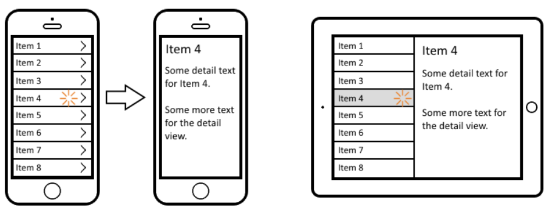 Primary/Detal App
Instead of implementing according to the width of the device, because we do not have to install more emulators, we will do it depending on
whether the mobile is portrait or landscape.
In this way, with the vertical mobile we will have an activity that will load the Fragment of the list or the Fragment of the detail. On the other hand, in the Landscape view,
the same Activity will contain the two Fragments, the one from the list and the one from the detail. So we will have a single Activity and
two Fragments, depending on the orientation we will load one or both. We will start by designing the Layout of the MainActivity,
we will create two versions, one for the Portrait version and the other for the Landscape version.
We see that it contains a single container for Fragments, to which we put an ID to be able to reference it.
Now it's time to create the Landscape version. We can do it in several ways, but the easiest is from the editor itself in design view.
We press the rotate view button 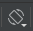 and select the option to create a Landscape variant. You could also create a version for a tablet, etc ...
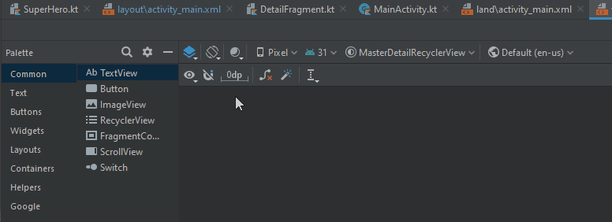
Notice that it has created the activity_main directory, with the two layouts. The suffix (land) has been added to Landscape
As we see in the layout above, we will have an ImageView that will contain the image and three TexViews, one for the name, another for the real name and the last one for the description.
The description is inside a ScrollView, to be able to scroll if the description grows a lot.
The data that our application will handle will be SuperHeroes, with your name, alter ego, description, and photo. Below we see the class that contains your information.
SuperHero.ktCreate the file inside the model folder
data class Superhero(
var id:Int,
var superhero:String,
var publisher:String,
var realName:String,
var photo:String,
var description:String
){
companion object{
var listSuper:MutableList = ArrayList()
fun getSuperheros(): MutableList{
listSuper.clear()
listSuper.add(Superhero(1,"Spiderman", "Marvel", "Peter Parker", "spiderman.jpg",LoremIpsum().values.first()))
listSuper.add(Superhero(2,"Daredevil", "Marvel", "Matthew Michael Murdock", "daredevil.jpg",LoremIpsum().values.first()))
listSuper.add(Superhero(3,"Wolverine", "Marvel", "James Howlett", "logan.jpeg",LoremIpsum().values.first()))
listSuper.add(Superhero(4,"Batman", "DC", "Bruce Wayne", "batman.jpg",LoremIpsum().values.first()))
listSuper.add(Superhero(5,"Thor", "Marvel", "Thor Odinson", "thor.jpg",LoremIpsum().values.first()))
listSuper.add(Superhero(6,"Flash", "DC", "Jay Garrick", "flash.png",LoremIpsum().values.first()))
listSuper.add(Superhero(7,"Superman", "DC", "Clark Kent", "superman.jpg",LoremIpsum().values.first()))
listSuper.add(Superhero(8,"Iron Man", "DC", "Tonny Stark", "ironman.jpg",LoremIpsum().values.first()))
listSuper.add(Superhero(9,"Green Lantern", "DC", "Alan Scott", "green_lantern.jpg",LoremIpsum().values.first()))
listSuper.add(Superhero(10,"Wonder Woman", "DC", "Princess Diana", "wonder_woman.jpg",LoremIpsum().values.first()))
return listSuper
}
fun getSuperHeroById(mId: Int?):Superhero?{
val superhero = getSuperheros().filter { superHero ->
superHero.id==mId
}
return superhero[0]?:null
}
fun getFirstID():Int{
return getSuperheros()[0].id
}
}
}
Pay special attention to the Companion object , which will act as the source of our data, in a real application the data would be obtained from the Internet or from other sources such as Databases.
Access methods have also been created.
The next thing we will do is save the images in our project. For this we are going to create the RAW folder within res folder. This folder is used to store images, videos, audios, that is, raw files.
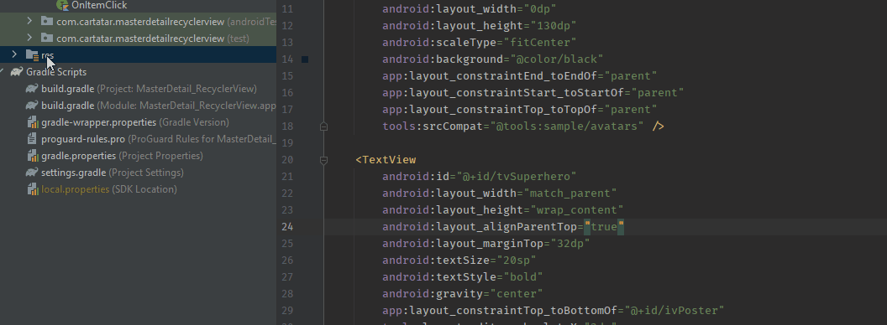 Creating RAW resources
In this folder we paste the images, we can do it directly from the explorer
It cannot have special characters other than the underscore "_".
Capitalization is not possible.
It cannot start with a number.
To access these images from code and put them in an ImageView we first get the resource.
Note that it is the name of the image without an extension
val inputStream =context.resources.openRawResource(R.raw.batman)
//Get an inputStream por batman.jpg in RAW folder.
Then with BitmapFactory and the inputStream we get the bitmap .
val image = BitmapFactory.decodeStream(inputStream)
Finally we assign that Bitmap to the ImageView through its method setImageBitmap(bitmap: Bitmap)
ivPoster.setImageBitmap(image)
The code would look something like this:
val inputStream =context.resources.openRawResource(R.raw.batman)
val image = BitmapFactory.decodeStream(inputStream)
ivPoster.setImageBitmap(image)
But of course, in this case we obtain the name of the image of a SuperHero type object in its "photo" attribute.
How do we obtain the RAW resource of a String?
One solution is using the getIdentifier(String, resType, package) method. Suppose we have in the variable "imageName"
the string of the image (remember without the extension).
Let's see an example:
val context: Context = ivPoster.context
val id = context.resources.getIdentifier(
imageName, //Something like "batman"
"raw",
context.packageName
)
val inputStream =context.resources.openRawResource(id)
//........
The context can be obtained from the ImageView itself.
Now it is necessary to create one more layout. This will be the layout that will be used for each of the elements in the list.
So we are going to create a layout type resource, called list_item.xml
As already mentioned, this file will be the one that shapes each element of the list. That is, how each item will look
Notice how we use a CardView that allows us to give an elevation effect and border radius .
Before continuing, let's create an OnItemClick interface, which will have an onItemClick (hero: SuperHero) method.
We will use it as a callback to communicate the MainActivity with the DetailFragment
OnItemClick.kt
interface OnItemClick {
fun onItemClick(hero:Superhero)
}
Now we are going to implement the code of the Fragments . Let's start with ListFragment.kt
ListFragment.kt
class ListFragment() : Fragment() {
//property that indicates if we want to view a single item list or grid list. Used on onCreateView
private var columnCount = 2
//Listener is our callback
var listener:OnItemClick? = null
override fun onCreate(savedInstanceState: Bundle?) {
super.onCreate(savedInstanceState)
//When fragment is created, "search" on its arguments a bundle with Key ARG_COLUMN_COUNT and set the property above
arguments?.let {
columnCount = it.getInt(ARG_COLUMN_COUNT)
}
}
//When fragment is attaching to an activity, the context is the activity. Remember MainActivity Implements OnItemclick
override fun onAttach(context: Context) {
super.onAttach(context)
if (context is OnItemClick) {
listener = context
}
}
//Detach the listener. Set it to null
override fun onDetach() {
super.onDetach()
listener = null
}
override fun onCreateView(
inflater: LayoutInflater, container: ViewGroup?,
savedInstanceState: Bundle?
): View? {
//inflate creates a View variable from a layout resource, in this case fragment_list which is just a RecyclerView
val view = inflater.inflate(R.layout.fragment_list, container, false)
// Set the adapter and the LayoutManager of the recyclerView
if (view is RecyclerView) { //smart cast
with(view) {
layoutManager = when {
columnCount <= 1 -> LinearLayoutManager(context)
else -> GridLayoutManager(context, columnCount)
}
adapter = MyItemRecyclerViewAdapter(Superhero.getSuperheros(),listener)
}
}
return view
}
//Creating an static method to simulate factory pattern. Creates a new ListFragment, and sets countColumn param through bundle.
companion object {
const val ARG_COLUMN_COUNT = "column-count"
@JvmStatic
fun newInstance(columnCount: Int) =
ListFragment().apply {
arguments = Bundle().apply {
putInt(ARG_COLUMN_COUNT, columnCount)
}
}
}
}
Nothing different from other Fragments, except for the onCreateView method. This method inflates
the view (R.layout.fragment_list )
remembering that it is a Recyclerview. Then based on the columnCount parameters that we have passed when creating it,
will put a LayourManager or another in the Recyclerview . LinearLayoutManager
for a single item per row and GridLayoutManager for more than one item per row.
Another important element of the RecyclerView are the adapters . The adapters
are the classes in charge of putting the data (usually a list) each one in its element.
We must assign one. In this case one of ours (MyItemRecyclerViewAdapter ).
This class (MyItemRecyclerViewAdapter ) will be the one that uses the data from the SuperHero List and creates a new item for each item in the list,
and will create the indicated layout, in this case list_item.xml
Let's see the MyItemRecyclerViewAdapter.kt class
MyItemRecyclerViewAdapter.kt
class MyItemRecyclerViewAdapter(
private val superHeroList: List,
private val listener:OnItemClick?
) : RecyclerView.Adapter<MyItemRecyclerViewAdapter.ViewHolder>() {
//Creates a ViewHolder for every item of the list (superHeroList)
override fun onCreateViewHolder(parent: ViewGroup, viewType: Int): ViewHolder {
return ViewHolder(
ListItemBinding.inflate(
LayoutInflater.from(parent.context),
parent,
false
)
)
}
//In this function customize our ViewHolder with its data depending on the position
override fun onBindViewHolder(holder: ViewHolder, position: Int) {
val superhero = superHeroList[position]
holder.tvSuperhero.text = superhero.superhero
holder.tvRealName.text = superhero.realName
holder.tvPublisher.text = superhero.publisher
//We are using an extension toBipmap
holder.ivPoster.setImageBitmap(superhero.photo.toBitmap(holder.ivPoster.context))
//We set the tag with superhero data, in order to obtain its data in the listener
holder.itemView.tag = superhero
holder.itemView.setOnClickListener(holder) //Our ViewHolder implements OnClickListener
}
//We need to know the length of the list. It will be the size of out data list
override fun getItemCount(): Int = superHeroList.size
//This inner class contains all view of each item on list_item.xml
inner class ViewHolder(binding: ListItemBinding) : RecyclerView.ViewHolder(binding.root), View.OnClickListener {
val tvSuperhero: TextView = binding.tvSuperhero
val tvRealName: TextView = binding.tvRealName
val tvPublisher: TextView = binding.tvPublisher
val ivPoster: ImageView = binding.ivPoster
override fun toString(): String {
return super.toString() + " ${tvRealName.text} is ${tvSuperhero.text} from ${tvPublisher.text}"
}
override fun onClick(v: View?) {
//First we recovery de superHero through the tag. Remember we have set it before (onBindViewHolder)
val superHero = v?.tag as Superhero
//later we call our callback with the SuperHero param to inform ListFragment, and then MainActivity
listener?.onItemClick(superHero)
}
}
}
We have made an extension in order of implementing toBipmap method in Extensions.kt.
//This function pass an string like "batman.jpg" that is in raw folder to an Bitmap
fun String.toBitmap(context:Context):Bitmap{
val imageName = this.split(".")[0]
val id = context.resources.getIdentifier(
imageName,
"raw",
context.packageName
)
val inputStream =context.resources.openRawResource(id)
return BitmapFactory.decodeStream(inputStream)
}
First we see that two objects are passed to the constructor, the data list (SuperHero ) and the OnItemClick callback, to communicate with the activity when clicking on an element.
We also see, that the class extends from RecyclerView.Adapter<MyItemRecyclerViewAdapter.ViewHolder> ()
Now take a look to DetailFragment.kt
DetailFragment.kt
class DetailFragment : Fragment() {
private var superHeroId: Int? = null
private var superHero: Superhero? = null
override fun onCreate(savedInstanceState: Bundle?) {
super.onCreate(savedInstanceState)
arguments?.let {
superHeroId = it.getInt(ARG_HERO,-1)
superHero = Superhero.getSuperHeroById(superHeroId)
}
}
override fun onCreateView(
inflater: LayoutInflater, container: ViewGroup?,
savedInstanceState: Bundle?
): View? {
// Inflate the layout for this fragment
return inflater.inflate(R.layout.fragment_detail, container, false)
}
override fun onViewCreated(view: View, savedInstanceState: Bundle?) {
super.onViewCreated(view, savedInstanceState)
view.findViewById<TextView>(R.id.tvSuperhero).text = superHero?.superhero
view.findViewById<TextView>(R.id.tvRealName).text = superHero?.realName
view.findViewById<TextView>(R.id.tvDescription).text = superHero?.description
view.findViewById<ImageView>(R.id.ivPoster).setImageBitmap(superHero?.photo?.toBitmap(view.context))
}
companion object {
@JvmStatic
fun newInstance(heroId: Int) =
DetailFragment().apply {
arguments = Bundle().apply {
putInt(ARG_HERO, heroId)
}
}
}
}
This fragment receives an Int param which is the ID of a SuperHero ,
then on onCreate method we search the hero that corresponds to this ID
superHeroId = it.getInt(ARG_HERO,-1) //Get the incoming param
superHero = Superhero.getSuperHeroById(superHeroId)
Now, let's see through some images the arrangement of elements of how the different elements are going to be positioned.
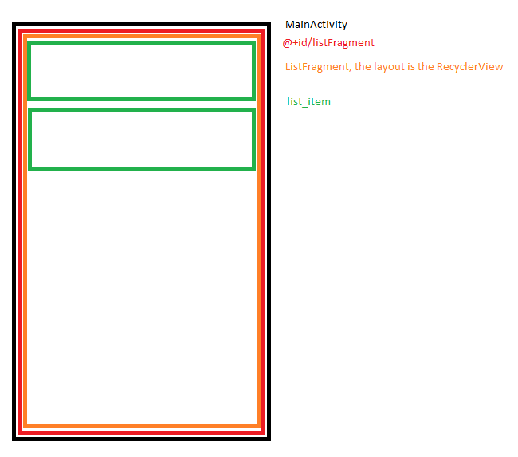 Layouts portrait List
First we have the MainActiviy in Portrait whose layout only has one container (listContainer),
in this container we will load the ListFragment or DetailFragment as the case may be.
Initially we will load ListFragment , and once we click on an element we will load DetailFragment with the element's data in the same listContainer .
Layout potrait Detail
In the case of landscape , as the MainActivity has 2 containers (listContainer and detailContainer),
we will load ListFragment and DetailFragment in their respective containers.
When starting the DetailFragment it will contain the data of the first SuperHero in the list.
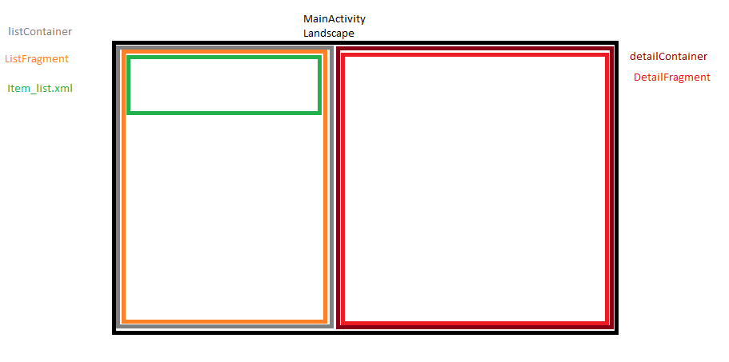 Layouts landscape
Finally let's see MainActivity.kt code
MainActivity.kt
class MainActivity : AppCompatActivity(),OnItemClick {
private val layoutList:FrameLayout by lazy { findViewById(R.id.containerList) }
private val layoutDetail:FrameLayout? by lazy { findViewById(R.id.containerDetail) }
override fun onCreate(savedInstanceState: Bundle?) {
super.onCreate(savedInstanceState)
setContentView(R.layout.activity_main)
//Load ListFragment on its container. (layoutList)
loadRecyclerView()
//In the case we were in landscape we load also the DetailFragment in its container. (layoutDetail)
if (isLandScape()){
//We load first SuperHero
loadDetailFragment(true, Superhero.getFirstID())
}
}
private fun loadRecyclerView() {
supportFragmentManager.beginTransaction()
.replace(layoutList.id, ListFragment.newInstance(1))
.addToBackStack(null)
.commit()
}
/*Work around that let us to know if we're un landscape mode*/
private fun isLandScape():Boolean {
return layoutDetail != null
}
private fun loadDetailFragment(twoPane:Boolean, heroID:Int){
//If layoutDetail is null (we're in portrait mode) then we load DetailFragment in layoutList
val id = layoutDetail?.id?:layoutList.id
supportFragmentManager.beginTransaction()
.replace(id, DetailFragment.newInstance(heroID))
.addToBackStack(null)
.commit()
}
//Callback implementation
override fun onItemClick(hero: Superhero) {
//We don't nee to use snackbar, which is such as an enhanced Toast where you can implement actions.
//But I wanted to introduce it to you
Snackbar.make(layoutList, "You have clicked on ${hero.superhero}", Snackbar.LENGTH_LONG)
.setAction("Open"){
loadDetailFragment(isLandScape(), hero.id)
}
.show()
}
}